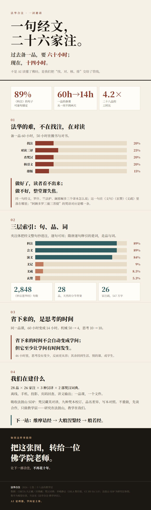

01
法华的难，不在找注，在对读
备一品 60 小时，50 小时在搬书与对书。
做好了，读者看不出来；
做不好，整堂课失焦。
同一句经文，罗什、竺法护、阇那崛多三个译本怎么说；这一句在《文句》《玄赞》《义疏》里落在哪里；“阿耨多罗三藐三菩提”的梵语对应是哪一条。这些劳动不产生洞见，只消耗注意力。
02
三层索引：句、品、词
材料有三种形状，就用三种索引。
1 取文本CBETA 大正藏、卍续藏，保留页码与品次
2 切句《妙法莲华经》切成 2,848 句
3 对齐句看夹注、品看二十六家、词看辛嶋
4 呈现点句看注、点品看众说、点词看梵汉
2,848《妙法莲华经》句数
28品，天然的分节骨架
26家注疏，547 万字
夹注体（科注、会义、演义）把经文整句抄进注，逐句可用；隋唐逐句释（义记、义疏、玄赞）引的是词，走品与词。二十六家几乎每一部都 28/28 品有注。
03
省下来的，是思考的时间
同一品课，60 小时变成 14 小时。
50h→4h机械劳动
10h→10h思考与设计
17%→71%思考占比
省下来的时间不会自动变成学问；
但它至少让学问有时间发生。
46 小时里，思考没有变少，反而更从容；其余回到生活、别的课、或学生。
04
这不是“用 AI 读经”
AI 是利器，学问是主体。
核心是文字对齐，不是生成滚动杂凑＋单调链，可重现、可检查、不会幻觉。
梵汉对照不是译经辛嶋词典给对应与用例，不给“这一句该怎么译”。
判断、取舍、连结，仍然是老师二十六家注，课堂只讲三家；选哪三家，是教学。
机器负责“都在这里”，
老师负责“为什么是这一个”。
这是基础设施与教育的分工。
05
规模，才让这件事成立
单品，手工就好；
十三品以上，管线才划算。
1 品
工时 60 对 14，管线赢；现金 6,500 对 8,110，管线反而贵——固定成本还没摊开。
13 品
打平；之后每多一品，管线多赚 ¥5,450。
28 品
1,680h → 404h；人工是管线的 4.2 倍。
做一条可以长到二十八品、
再长到第二部典籍的管线。
不是做一个网站，是做一套可以反复使用的基础设施。
06
我们在建什么
法华合注，七卷二十八品。
28 品 × 26 家注 × 3 种汉译 × 2 部梵汉词典。
离线、手机、投影、页码回查、讲义输出；一品课，一个文件。
吸收法鼓山 SDP：梵汉藏英对读、九种梵本校订、
品名差异、写本对照。
不重做，先谈合作，只做教学层——研究在法鼓山，教学在我们。
下一站：维摩诘经 → 大般涅槃经 → 般若经。
07
邀请你，一起把这件事做成
AI 是这一代人的利器。我们想用它，把佛学研究做成一个盛世——不是更多的论文，是更好的课堂、更深的合注、更亮的灯。
佛学院老师试用一学期，给我们 20 个备课案例
道场与课堂把下一门法华课搬上来
校勘 / 梵汉 / 编程一起把 26 家补齐
支持者让管线长到二十八品，再长到第二部典籍
如果这件事值得
把这张图，转给一位
佛学院老师。
让下一部合注，不再花十年。
下载长图
长图预览（点击展开，适合微信转发）
